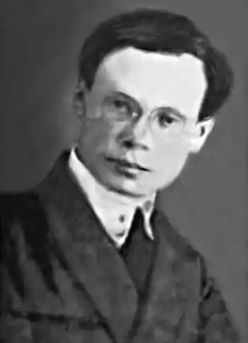

Народився у 1898 р. в с. Полонне на Хмельниччині в єврейській родині. Мав незакінчену вищу освіту. Жив у Кривому Розі та в єврейській колонії на півдні України. Надрукував з півсотні віршів у "Червоному Шляху", "Всесвіті", "Молодняку", "Зорі", "Службовцю".
На час арешту працював коректором на харківській типографській фабриці.
Арештований 23.04.1938 р., засуджений 11.05.1938 р. як "участник антисоветской террористической шпионско-сионистской организации". Розстріляний 5.06.1938 р. у Харкові.